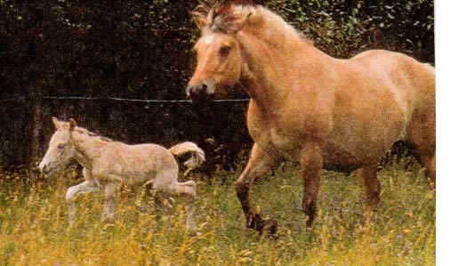
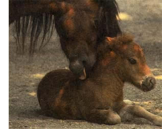

COUNTRY VET
Preventive care for pregnant mares.
If Tennyson was right--that "In the spring a young man's fancy lightly turns to thoughts of love"--well, then, horses and humans aren't so far apart. Horses are what are known as long-day breeders, which means that, with longer days just around the corner, now's the time to start getting your broodmares ready. Good preventive medicine will help to ensure the health of the mare and increase the likelihood of a live foal.
Broodmares should be in good overall health and be up to date on vaccinations, Coggins testing, and deworming. Good dental care will enable your mare to chew her feed properly and maintain her weight throughout pregnancy. For optimal conception rates, broodmares should be neither too thin nor too fat. What's the right weight? You shouldn't see but should easily feel your mare's ribs, and there should be some fat around its tail head. Also, the bones of its pelvis, neck, and shoulders should blend smoothly with the rest of the body. The spring transitional period (time to come into first heat in which ovulation occurs) is longer in thin mares than in mares in good body condition.
Many broodmares have some muscular skeletal or lameness problem that makes them unsuitable for athletic use. Most of these conditions will not affect their ability to carry a foal. However, serious conditions that cause chronic pain will decrease conception rates. And, as the foal grows and the mare's weight increases, some lameness problems may become more severe.
It's important that prospective broodmares have excellent conformation of their external reproductive tract to minimize the possibility of uterine infections. Ideally, the lips of the vulva should be perpendicular to the ground and not slope toward the mare's anus.. A veterinarian can use ultrasound to examine the internal reproductive tract for uterine cysts, which may hinder the mare's ability to conceive and maintain pregnancy. Ultrasound can also be used to image the ovaries and detect follicles and ovarian tumors.
Increased amounts of fluid in the uterus may sometimes be found with uterine infections. If a uterine infection is suspected, a sterile swab can be passed into the uterus to check for telltale white blood cells. A culture can then be performed to identify the infective bacteria and determine which antibiotics will be most effective.
A speculum passed into the uterus can be used to check for urine pooling in the vagina and to assess the cervix. Injuries to the cervix can occur during dystocia (difficult or abnormally painful births) and may not allow the cervix to close properly during subsequent pregnancies, increasing the risk of uterine infections. Biopsies taken from the inside lining of the uterus are often very useful in determining if there is scarring or inflammation of the uterus. Uterine biopsies are graded, enabling your veterinarian to predict your mare's chances of carrying a foal to term.
For the first two trimesters, the pregnant mare's nutritional requirements are the same as before pregnancy. Mares in early- and mid-gestation can easily maintain their weight on good quality legume (clover or alfalfa) pasture or hay and a trace mineral salt block.
The period of greatest development is during the last trimester, when 60% to 65% of fetal growth occurs. The mare's nutritional needs increase during this time to meet her own requirements, as well as those of the rapidly growing fetus. In the last three months of pregnancy, the mare's protein and energy requirements increase 32% and 20%, respectively. Unless you are feeding your mare a high-quality forage, she may need X to Y4 pounds of a high quality grain mix per 100 pounds of body weight daily to meet her increased requirements. She'll also need more calcium and phosphorus in order to mineralize the developing fetal skeleton. Calcium requirements increase by 85% in the last trimester-an amount that can't be met simply by increasing your mare's feed. At this stage, you'll want to supplement a grass hay diet with a 50:50 mixture of trace mineralized salt and dicalcium phosphate, fed free-choice. To avoid possible bone disease in foals, it's important that pregnant broodmares be fed nutrients to meet but not exceed recommended requirements .
Never feed pregnant mares tall fescue grass during the last trimester of pregnancy, as this may lead to prolonged gestation, oversized foals, dystocia, decreased milk production, and thickened placentas, or afterbirth. Tall fescue grass is the most widely grown forage in the U.S. and is found mainly in the Southeast and Midwest, where there's an estimated 35 million acres of the stuff. The toxicity of fescue is linked to a fungus that grows between the cells of the plant and produces toxins. While the fungal toxins are generally bad news for animals, they're a boon for fescue grass, boosting the plant's resistance to drought and insects and enhancing its growth. It is estimated that 80% of fescue pastures are infected by the fungus.
Horses are more susceptible to infected fescue than are cattle, and as little as 5% to 10% infected tall fescue plants in a pasture can lead to fescue toxicity in mares. Gestation can be prolonged for several weeks, resulting in a foal that is much larger than normal, yet at the same time developmentally premature, with overgrown hooves, fine hair, lax leg tendons, and, perhaps, missing incisors.
Many foals born to mares fed infected fescue will not survive. Only one foal in 11 lived past the first few days of age in one study. In some cases, the placenta becomes so thick that the foal, unable to break out, suffocates. In others, udder development and milk production are inhibited, leaving the mare with dangerously little or no colostrum, a necessary source of protective antibodies for the foal.
It is possible to test tall fescue grass or seed to determine if the infective fungus is present. And noninfected varieties of fescue have been developed, although they are not as hardy. Also, drugs have recently become available that help to offset some of the toxic effects of infected fescue. But the absolute best prevention remains to avoid feeding tall fescue grass and that means pasture, hay, and haylage-during the last trimester.
A mare seeds 85% mere calcium in the last trimester-sad that can't be met by simply increasing feed.
Pregnant mares should be vaccinated for equine herpes virus 1 at five, seven, and nine months of gestation. Equine herpes virus 1 is a common cause of late term spontaneous abortion in horses and may also cause respiratory and central nervous system disease. To reduce the risk of exposure to equine herpes virus, you'll also want to isolate your pregnant mares from other horses that have a history of respiratory tract disease or spontaneous abortion.
Vaccination against common equine diseases such as equine encephalomyelitis, tetanus, rhinopneumonitis, and influenza should be performed one month before the expected foaling date to promote high immunoglobulin concentrations in the colostrum. The foal is completely dependent on colostrurm for its ability to fight infections. Vaccinating the mare before foaling will ensure that the foal will be able to mount an effective immune response against many of the diseases it is likely to encounter after birth.
If the mare is to be moved to a different farm to foal, this should be done at least one month beforehand to allow her to produce antibodies against any diseases present in the new environment.
Deworm your broodmare during the last month of gestation to reduce parasite burdens and decrease the number of eggs to which the foal may be exposed. Most currently available dewormers are safe for pregnant mares. Some veterinarians recommend deworming one or two days after foaling to reduce the foal's risk of contracting roundworms or small stomach worms.
Normal gestational length-calculated from the last day the mare stood for breeding-ranges from 320 to 350 days. You'll find accurate breeding records very useful for predicting foaling times, allowing you to keep an eye on your mare during the days that foaling is expected.
Prolonged gestation (greater than 350 days) doesn't necessarily indicate an abnormality, especially if the mare has no history of exposure to infected tall fescue grass. Prolonged gestation may occur normally in mares bred early in the year, in those carrying colts, and in those that are undernourished during the second half of gestation.
Late-term foals may be examined using ultrasound. Your veterinarian may want to examine the placenta and determine the fetal heart rate, which can be an indicator of fetal stress.
It is difficult to predict foaling times based on udder development, appearance of udder secretions, and relaxation of the tail head and other pelvic ligaments. However, frequent examination may allow a reasonable guess as to when foaling is imminent. Usually, the mare's udder will not appear to enlarge until three to 30 days before foaling. Maiden mares may not develop an enlarged udder until one to two days before foaling.
Normal colostrum ranges from honey-like to thick and yellowish. As foaling approaches, some mares may leak colostrum and it may accumulate on the teat ends (waxing). If the mare leaks enough, you can milk her periodically before foaling, freeze the colostrum, and give it to the foal after birth.
Water hardness tests and some tests specifically made for use in mares may be used to predict when mares will foal. These tests measure colostral concentration of calcium, which increases as the mare approaches her foaling date. However, these tests are more useful to predict when a mare will not foal, rather than when she definitely will. Several electronic devices are also available that set off a remote alarm when the foal passes through the birth canal.
Be sure foaling stalls are disinfected, clean, warm, and dry. The stall should be large enough to easily accommodate the mare, foal, and anyone who assists during foaling. Mares are very likely to lie down during foaling and so there must be enough room for the mare to stand up easily. If foaling appears imminent the mare's vulva may be washed with an antibacterial soap and her tail wrapped to minimize contamination.
Most mares will foal at night or very early in the morning. Labor progresses through three stages. During the first stage, the foal positions itself for delivery, a process that can take anywhere from 30 minutes to four hours. During this stage, the mare may appear uncomfortable and show clinical signs resembling colic, such as sweating and pawing at the ground or at its abdomen. Second-stage labor begins with rupture of the fetal membranes (water breaks) and ends with delivery of the foal. This stage is normally very rapid and should not exceed 40 minutes. If the foal is not delivered within this period of time, a true emergency exists and you should call your veterinarian. Third-stage labor involves passage of the placenta and should be complete within four hours. After the placenta is passed, carefully examine it for missing pieces. It's important that no part of the afterbirth remain in the uterus. Retained placenta in mares can cause serious complications including founder (laminitis) and severe uterine infections-and requires veterinary attention.
Breeding mares and following them through gestation to foaling can be a very rewarding experience. Good preventive health care along the way will increase the chances of a healthy mare and foal. Your veterinarian is the best source of advice for health cafe and any problems that may be a concern in your area.
|
 |
 |
|